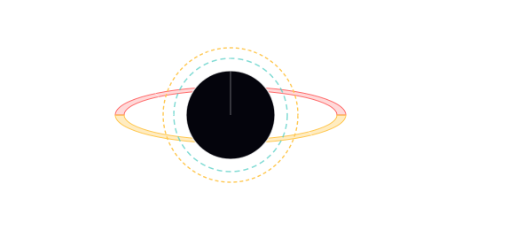
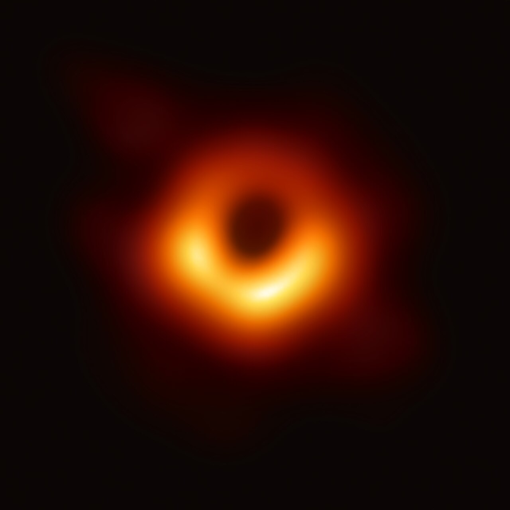

Black holes
A region of spacetime where mass is so compressed that even light can't climb out — and we've now imaged the shadows of two of them.

A black hole forms when a sufficient mass collapses to inside its Schwarzschild radius — the size at which the escape velocity equals the speed of light. The formula on the right says it directly: for any mass M, there's a radius r_s = 2GM/c² inside which nothing escapes. The Sun's Schwarzschild radius is 3 km. The Earth's is 9 mm. Compress either to that size and you've made one.
Real black holes form by stellar collapse (a massive star running out of fusion fuel; the core falls inside its own Schwarzschild radius) or by accretion of mass onto seed black holes in the early universe (the supermassive black holes at galaxy centres, 10⁶ to 10¹⁰ solar masses). They aren't holes — they're points with a one-way membrane. Outside the event horizon spacetime is well-behaved and orbits work normally. Inside, all timelike paths point toward the singularity.
We detect them three ways. **Stellar dynamics**: stars orbiting an invisible mass concentration imply a black hole — that's how Sgr A* (4 × 10⁶ M☉ at the centre of the Milky Way) was confirmed, by tracking stars whipping around the central darkness for 30 years (Nobel 2020). **X-ray emission from accretion discs**: gas spiralling in heats to 10⁶ K and glows in X-rays — Chandra's specialty. **Direct shadow imaging**: the Event Horizon Telescope ([interferometry](observation/interferometry) across 8 sub-mm observatories) imaged the shadow of M87's black hole in 2019 and Sgr A* in 2022. Two black holes, photographed.
What black holes do NOT do: lead anywhere useful for spaceflight. They're the most extreme energy regimes in the universe and we observe them with great enthusiasm; they're also the worst places to fly a spacecraft. Tidal forces near a stellar-mass black hole would shred a vehicle long before any "event horizon crossing" became a question. Supermassive black holes are calmer (lower curvature at the horizon) but tens of thousands of light-years away. They are a thing to look at, not a thing to visit.

SEE IN THE APP
- /explore Sun panel: stellar physics chip — pivot into compact objects